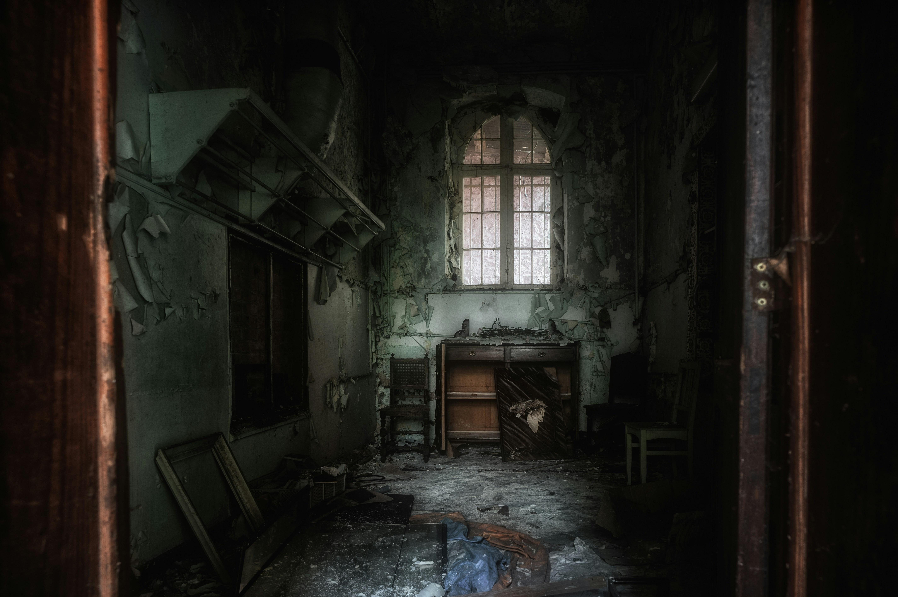

source: unsplash
En haut des escaliers tu trouves une fiole en verre posée sur une table.
Une ombre noire apparaît devant toi.

En haut des escaliers tu trouves une fiole en verre posée sur une table.
Une ombre noire apparaît devant toi.